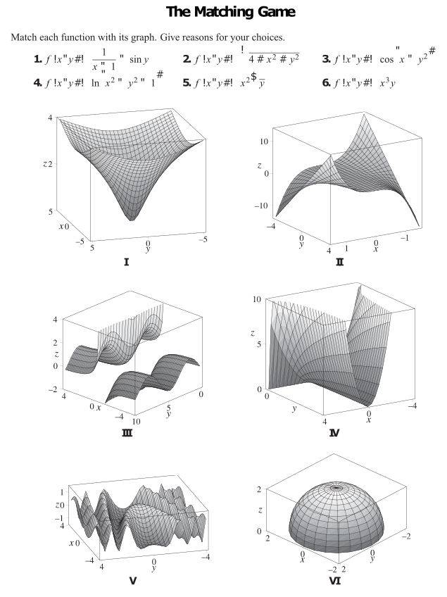

MATH 2330: Multivariable Calculus
Section 4.1: Functions of Several Variables
We will work through the following examples together.
(Note: Example 1(a) can be found in a pre-class video / lecture notes.)
Introduce yourself to your neighbors. Share one unusual thing that you did over the break.
